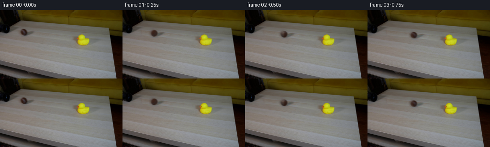
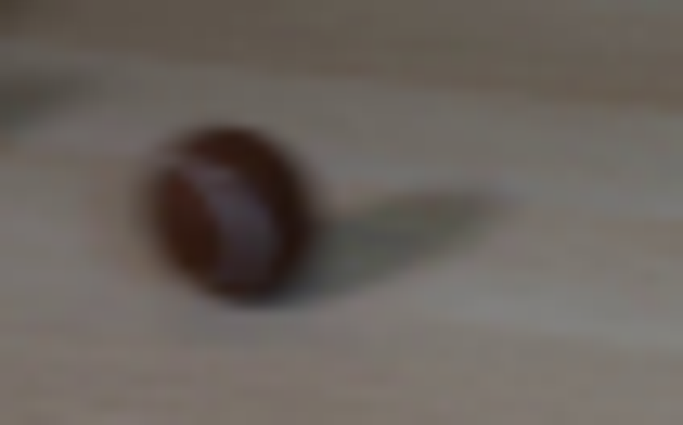
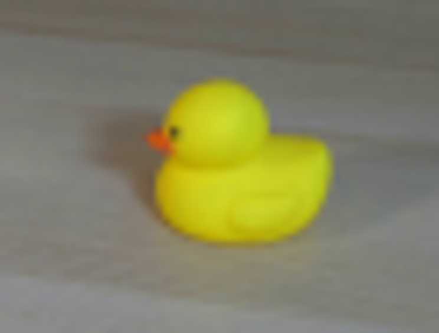
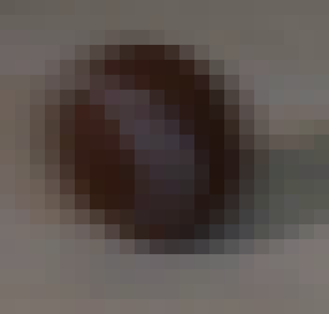
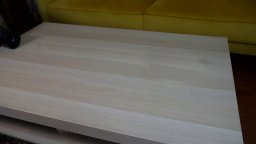
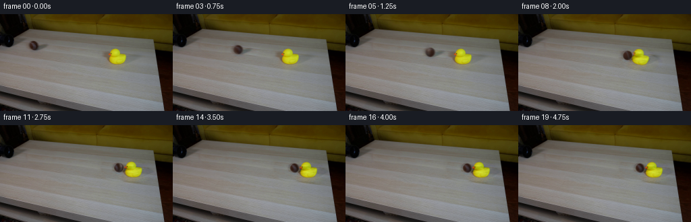
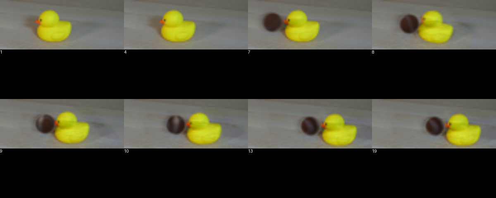
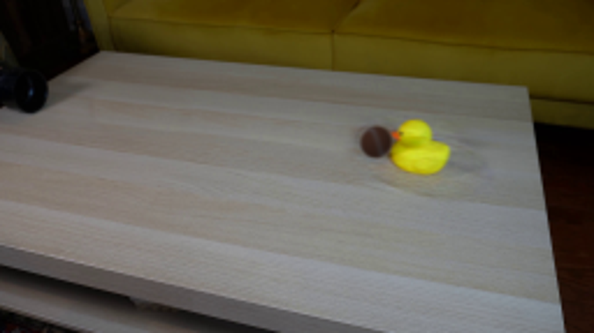

CODING AGENTS AS PIXEL WORLD MODELS
traex/GPT-6.1-Sol · 0009
点击播放 · 原生 RGB 像素
逐轮保存的候选
回放视频、检查图与代码变化。
每份候选均可单独播放。实际图片检查记录在下方工具轨迹中。
候选 01播放与检查图
点击播放 · 原生 RGB 像素


展开代码变化
--- 上一保存版本
+++ 本次保存版本
@@ -0,0 +1,147 @@
+from pathlib import Path
+import numpy as np
+import cv2
+from PIL import Image
+from scipy.ndimage import gaussian_filter
+import artifact_io
+
+ROOT=Path(__file__).resolve().parent
+im=np.asarray(Image.open(ROOT/'first_frame.png').convert('RGB'))
+H,W=im.shape[:2]
+y,x=np.mgrid[:H,:W]
+
+# Restore the continuous, lightly grained tabletop under the two moving objects.
+# Sampling along its perspective-aligned grain keeps the planks uninterrupted.
+ball_region=(((x-50)/10)**2+((y-46)/10)**2<1)|(((x-62)/20)**2+((y-49)/8)**2<1)
+duck_region=(((x-173)/23)**2+((y-65)/18)**2<1)|(((x-183)/24)**2+((y-71)/11)**2<1)
+clean=im.astype(np.float32).copy()
+regions=[]
+for m,dx in [(ball_region,40),(duck_region,-59)]:
+ donor=cv2.remap(im.astype(np.float32),(x+dx).astype(np.float32),(y+dx*.10).astype(np.float32),cv2.INTER_CUBIC,borderMode=cv2.BORDER_REFLECT)
+ a=cv2.GaussianBlur(m.astype(np.float32),(0,0),2)
+ collar=(a>.04)&(a<.20)
+ compensation=np.median(im[collar].astype(float)-donor[collar],axis=0)
+ alpha=np.clip(a*2,0,1)
+ clean=clean*(1-alpha[...,None])+(donor+compensation)*alpha[...,None]
+ regions.append(alpha)
+
+# Difference mattes retain soft silhouettes, the original material and its shadows.
+bdiff=(im.astype(np.float32)-clean)*(regions[0]>0.00005)[...,None]
+ddiff=(im.astype(np.float32)-clean)*(regions[1]>0.00005)[...,None]
+# A dilated duck silhouette also includes its beak and its single visible eye.
+dm=((im[:,:,0]>137)&(im[:,:,1]>135)&(im[:,:,2]<95)&(x>158)&(x<190)&(y>48)&(y<77)).astype(np.uint8)
+dm=cv2.dilate(dm,np.ones((3,3),np.uint8))
+dm=cv2.GaussianBlur(dm.astype(np.float32),(0,0),.7)
+dbody=ddiff*dm[...,None]
+dshadow=ddiff-dbody
+
+bcx,bcy,br=50.1,46.6,6.9
+bnorm=((x-bcx)/br)**2+((y-bcy)/br)**2
+bmask=np.clip((1.5-bnorm)*2,0,1)
+bmask=gaussian_filter(bmask,.4)
+bshadow=bdiff*(1-bmask[...,None])
+
+# The sphere uses the photographed front's coloration, and an analytic rear
+# hemisphere. Lighting remains stationary while the felt and seam roll.
+S=4
+sy,sx=np.mgrid[:H*S,:W*S]
+sx=(sx+.5)/S-.5;sy=(sy+.5)/S-.5
+light=np.array([-.50,-.68,.61]);light/=np.linalg.norm(light)
+def illumination(a,b,c):
+ return .70+.30*np.maximum(a*light[0]+b*light[1]+c*light[2],0)
+
+# Photograph coordinates of the front hemisphere and its stationary lighting.
+xx=(x-bcx)/br; yy=(y-bcy)/br
+zz=np.sqrt(np.maximum(0,1-xx*xx-yy*yy))
+source_albedo=im.astype(np.float32)/illumination(xx,yy,zz)[...,None]
+source_albedo=np.clip(source_albedo,0,255).astype(np.float32)
+
+def shift_layer(layer,dx,dy,theta=0,pivot=(174,72)):
+ a=np.deg2rad(theta);c=np.cos(a);s=np.sin(a)
+ px,py=pivot
+ M=np.array([[c,-s,px-c*px+s*py+dx],[s,c,py-s*px-c*py+dy]],np.float32)
+ return cv2.warpAffine(layer,M,(W,H),flags=cv2.INTER_CUBIC,borderMode=cv2.BORDER_CONSTANT)
+
+# Rolling continues directly from the already-emerged ball in the first frame.
+# Collision transfers momentum to the light duck; both then stop by friction.
+tc=1.85
+hitx=157.5
+v0=64.1
+acc=2*(v0*tc-(hitx-bcx))/tc**2
+vin=v0-acc*tc
+
+def state(t):
+ if t<tc:
+ bx=bcx+v0*t-.5*acc*t*t
+ return bx, bcy+(bx-bcx)*.129, 0.,0.,0.
+ q=t-tc
+ # Positive impulses followed by monotone frictional deceleration.
+ dq=min(q,1.42)
+ dx=38.2*dq-.5*(38.2/1.42)*dq*dq
+ bq=min(q,1.62)
+ bx=hitx+28.0*bq-.5*(28.0/1.62)*bq*bq
+ dy=.129*dx
+ # The duck rocks on its rounded underside and returns upright.
+ tilt=17.5*np.exp(-2.9*q)*np.sin(8.5*q)
+ return bx,bcy+(bx-bcx)*.129,dx,dy,tilt
+
+
+def ball_render(background,bx,by,angle):
+ # 4x analytic silhouette avoids sharp pasted edges at this small resolution.
+ X=(sx-bx)/br;Y=(sy-by)/br
+ r2=X*X+Y*Y
+ Z=np.sqrt(np.maximum(0,1-r2))
+ inside=(r2<=1).astype(np.float32)
+ # Rotate about the perpendicular to the direction of travel.
+ nx=-.129;ny=1.;nn=np.hypot(nx,ny);nx/=nn;ny/=nn
+ c=np.cos(angle);s=np.sin(angle)
+ dot=nx*X+ny*Y
+ U=X*c-ny*Z*s+nx*dot*(1-c)
+ V=Y*c+nx*Z*s+ny*dot*(1-c)
+ T=Z*c-(nx*Y-ny*X)*s
+ # Repeating muted beige seam on the previously hidden felt.
+ lam=np.arctan2(U,T)
+ lat=np.arcsin(np.clip(V,-1,1))
+ seamdist=np.abs(lat-.76*np.sin(2*lam+.65))
+ stripe=np.exp(-.5*(seamdist/.115)**2)
+ albedo=np.empty((*X.shape,3),np.float32)
+ felt=np.array([61.,37.,28.]); seam=np.array([78.,74.,78.])
+ albedo[:]=felt+(seam-felt)*stripe[...,None]
+ # Small deterministic felt variation; no new scene resources.
+ grain=1.1*np.sin(32*U+15*V)*np.sin(29*T-17*V)
+ albedo+=grain[...,None]
+ rx=(bcx+U*br).astype(np.float32);ry=(bcy+V*br).astype(np.float32)
+ photographed=cv2.remap(source_albedo,rx,ry,cv2.INTER_CUBIC,borderMode=cv2.BORDER_REFLECT)
+ front=np.clip(T/.20,0,1)
+ albedo=albedo*(1-front[...,None])+photographed*front[...,None]
+ color=albedo*illumination(X,Y,Z)[...,None]
+ premult=color*inside[...,None]
+ # Optical softness matches the depth of field of the source photograph.
+ premult=cv2.GaussianBlur(premult,(0,0),.53*S)
+ alpha=cv2.GaussianBlur(inside,(0,0),.53*S)
+ premult=cv2.resize(premult,(W,H),interpolation=cv2.INTER_AREA)
+ alpha=cv2.resize(alpha,(W,H),interpolation=cv2.INTER_AREA)
+ return background*(1-alpha[...,None])+premult
+
+
+def render(t):
+ bx,by,dx,dy,theta=state(t)
+ bg=clean.copy()
+ # The cast shadow follows the translating contact point rather than spin.
+ bg+=shift_layer(bshadow,bx-bcx,by-bcy)
+ if t<tc:
+ bg+=ddiff
+ else:
+ bg+=shift_layer(dshadow,dx,dy)
+ bg+=shift_layer(dbody,dx,dy,theta)
+ return ball_render(bg,bx,by,(bx-bcx)/br)
+
+frames=[im.copy()]
+for k in range(1,20):
+ t=k/4
+ # A short shutter interval, constant for every frame, with true motion blur.
+ frame=np.mean([render(max(0,t+dt)) for dt in np.linspace(-1/48,1/48,5)],axis=0)
+ frames.append(np.clip(np.rint(frame),0,255).astype(np.uint8))
+frames=np.stack(frames)
+artifact_io.save(frames,ROOT)
+Image.fromarray(np.clip(clean,0,255).astype(np.uint8)).save(ROOT/'.tmp/clean.png')
候选 02播放与检查图
可观测工具轨迹
实际执行的命令与返回图片。
命令 1exit 0
/bin/bash -lc "ls -la && cat prompt.txt && printf '\\n---RULES---\\n' && cat GENERATION_RULES.md"
命令 2exit 0
/bin/bash -lc "cat artifact_io.py && python - <<'PY'
from PIL import Image
im=Image.open('first_frame.png'); print(im.size); im.resize((1024,576)).save('.tmp/enlarged.png')
PY"命令 3exit 0
/bin/bash -lc "python - <<'PY'
import importlib.util
for x in ['numpy','scipy','cv2','PIL']:print(x,importlib.util.find_spec(x))
from PIL import Image
im=Image.open('first_frame.png')
im.crop((32,30,85,63)).resize((848,528)).save('.tmp/ball.png')
im.crop((140,40,202,87)).resize((744,564)).save('.tmp/duck.png')
PY"命令 4exit 0
/bin/bash -lc "python - <<'PY'
from PIL import Image
im=Image.open('first_frame.png');im.crop((40,37,62,58)).resize((550,525),Image.Resampling.NEAREST).save('.tmp/ballpix.png')
PY"命令 5exit 0
/bin/bash -lc "python - <<'PY'
import numpy as np
from PIL import Image
x=np.array(Image.open('first_frame.png'))
for xy in [(174,57),(163,60),(174,70),(185,63),(188,68),(158,63),(50,46),(44,46),(57,48),(51,41),(50,54),(160,71),(145,70)]:print(xy,x[xy[1],xy[0]])
PY"命令 6exit 0
/bin/bash -lc "python - <<'PY'
import numpy as np,cv2
from PIL import Image
im=np.array(Image.open('first_frame.png'))
h,w=im.shape[:2];yy,xx=np.mgrid[:h,:w]
ball=((xx-50)/10)**2+((yy-46)/10)**2<1
ball |= (((xx-62)/20)**2+((yy-49)/8)**2<1)
# duck region with shadows
duck=(((xx-173)/23)**2+((yy-65)/18)**2<1) | (((xx-183)/24)**2+((yy-71)/11)**2<1)
mask=np.uint8(ball|duck)*255
# proposed fill with offset-table local clone, affine plane angle 0.10
clean=im.copy().astype(float)
for m,dx in [(ball,40),(duck,-59)]:
mapx=(xx+dx).astype(np.float32);mapy=(yy+dx*.10).astype(np.float32)
donor=cv2.remap(im,mapx,mapy,cv2.INTER_CUBIC,borderMode=cv2.BORDER_REFLECT).astype(float)
# local shading compensation fit along outer collar
a=cv2.GaussianBlur(m.astype(np.float32),(0,0),2)
collar=(a>.04)&(a<.20)
d=np.median(im[collar].astype(float)-donor[collar],axis=0)
alpha=np.clip(a*2,0,1)
clean=clean*(1-alpha[...,None])+(donor+d)*(alpha[...,None])
Image.fromarray(np.clip(clean,0,255).astype('uint8')).save('.tmp/clean.png')
PY"命令 7exit 0
/bin/bash -lc "cat > generate.py <<'PY'
from pathlib import Path
import numpy as np
import cv2
from PIL import Image
from scipy.ndimage import gaussian_filter
import artifact_io
ROOT=Path(__file__).resolve().parent
im=np.asarray(Image.open(ROOT/'first_frame.png').convert('RGB'))
H,W=im.shape[:2]
y,x=np.mgrid[:H,:W]
# Restore the continuous, lightly grained tabletop under the two moving objects.
# Sampling along its perspective-aligned grain keeps the planks uninterrupted.
ball_region=(((x-50)/10)**2+((y-46)/10)**2<1)|(((x-62)/20)**2+((y-49)/8)**2<1)
duck_region=(((x-173)/23)**2+((y-65)/18)**2<1)|(((x-183)/24)**2+((y-71)/11)**2<1)
clean=im.astype(np.float32).copy()
regions=[]
for m,dx in [(ball_region,40),(duck_region,-59)]:
donor=cv2.remap(im.astype(np.float32),(x+dx).astype(np.float32),(y+dx*.10).astype(np.float32),cv2.INTER_CUBIC,borderMode=cv2.BORDER_REFLECT)
a=cv2.GaussianBlur(m.astype(np.float32),(0,0),2)
collar=(a>.04)&(a<.20)
compensation=np.median(im[collar].astype(float)-donor[collar],axis=0)
alpha=np.clip(a*2,0,1)
clean=clean*(1-alpha[...,None])+(donor+compensation)*alpha[...,None]
regions.append(alpha)
# Difference mattes retain soft silhouettes, the original material and its shadows.
bdiff=(im.astype(np.float32)-clean)*(regions[0]>0.00005)[...,None]
ddiff=(im.astype(np.float32)-clean)*(regions[1]>0.00005)[...,None]
# A dilated duck silhouette also includes its beak and its single visible eye.
dm=((im[:,:,0]>137)&(im[:,:,1]>135)&(im[:,:,2]<95)&(x>158)&(x<190)&(y>48)&(y<77)).astype(np.uint8)
dm=cv2.dilate(dm,np.ones((3,3),np.uint8))
dm=cv2.GaussianBlur(dm.astype(np.float32),(0,0),.7)
dbody=ddiff*dm[...,None]
dshadow=ddiff-dbody
bcx,bcy,br=50.1,46.6,6.9
bnorm=((x-bcx)/br)**2+((y-bcy)/br)**2
bmask=np.clip((1.5-bnorm)*2,0,1)
bmask=gaussian_filter(bmask,.4)
bshadow=bdiff*(1-bmask[...,None])
# The sphere uses the photographed front's coloration, and an analytic rear
# hemisphere. Lighting remains stationary while the felt and seam roll.
S=4
sy,sx=np.mgrid[:H*S,:W*S]
sx=(sx+.5)/S-.5;sy=(sy+.5)/S-.5
light=np.array([-.50,-.68,.61]);light/=np.linalg.norm(light)
def illumination(a,b,c):
return .70+.30*np.maximum(a*light[0]+b*light[1]+c*light[2],0)
# Photograph coordinates of the front hemisphere and its stationary lighting.
xx=(x-bcx)/br; yy=(y-bcy)/br
zz=np.sqrt(np.maximum(0,1-xx*xx-yy*yy))
source_albedo=im.astype(np.float32)/illumination(xx,yy,zz)[...,None]
source_albedo=np.clip(source_albedo,0,255).astype(np.float32)
def shift_layer(layer,dx,dy,theta=0,pivot=(174,72)):
a=np.deg2rad(theta);c=np.cos(a);s=np.sin(a)
px,py=pivot
M=np.array([[c,-s,px-c*px+s*py+dx],[s,c,py-s*px-c*py+dy]],np.float32)
return cv2.warpAffine(layer,M,(W,H),flags=cv2.INTER_CUBIC,borderMode=cv2.BORDER_CONSTANT)
# Rolling continues directly from the already-emerged ball in the first frame.
# Collision transfers momentum to the light duck; both then stop by friction.
tc=1.85
hitx=157.5
v0=64.1
acc=2*(v0*tc-(hitx-bcx))/tc**2
vin=v0-acc*tc
def state(t):
if t<tc:
bx=bcx+v0*t-.5*acc*t*t
return bx, bcy+(bx-bcx)*.129, 0.,0.,0.
q=t-tc
# Positive impulses followed by monotone frictional deceleration.
dq=min(q,1.42)
dx=38.2*dq-.5*(38.2/1.42)*dq*dq
bq=min(q,1.62)
bx=hitx+28.0*bq-.5*(28.0/1.62)*bq*bq
dy=.129*dx
# The duck rocks on its rounded underside and returns upright.
tilt=17.5*np.exp(-2.9*q)*np.sin(8.5*q)
return bx,bcy+(bx-bcx)*.129,dx,dy,tilt
def ball_render(background,bx,by,angle):
# 4x analytic silhouette avoids sharp pasted edges at this small resolution.
X=(sx-bx)/br;Y=(sy-by)/br
r2=X*X+Y*Y
Z=np.sqrt(np.maximum(0,1-r2))
inside=(r2<=1).astype(np.float32)
# Rotate about the perpendicular to the direction of travel.
nx=-.129;ny=1.;nn=np.hypot(nx,ny);nx/=nn;ny/=nn
c=np.cos(angle);s=np.sin(angle)
dot=nx*X+ny*Y
U=X*c-ny*Z*s+nx*dot*(1-c)
V=Y*c+nx*Z*s+ny*dot*(1-c)
T=Z*c-(nx*Y-ny*X)*s
# Repeating muted beige seam on the previously hidden felt.
lam=np.arctan2(U,T)
lat=np.arcsin(np.clip(V,-1,1))
seamdist=np.abs(lat-.76*np.sin(2*lam+.65))
stripe=np.exp(-.5*(seamdist/.115)**2)
albedo=np.empty((*X.shape,3),np.float32)
felt=np.array([61.,37.,28.]); seam=np.array([78.,74.,78.])
albedo[:]=felt+(seam-felt)*stripe[...,None]
# Small deterministic felt variation; no new scene resources.
grain=1.1*np.sin(32*U+15*V)*np.sin(29*T-17*V)
albedo+=grain[...,None]
rx=(bcx+U*br).astype(np.float32);ry=(bcy+V*br).astype(np.float32)
photographed=cv2.remap(source_albedo,rx,ry,cv2.INTER_CUBIC,borderMode=cv2.BORDER_REFLECT)
front=np.clip(T/.20,0,1)
albedo=albedo*(1-front[...,None])+photographed*front[...,None]
color=albedo*illumination(X,Y,Z)[...,None]
premult=color*inside[...,None]
# Optical softness matches the depth of field of the source photograph.
premult=cv2.GaussianBlur(premult,(0,0),.53*S)
alpha=cv2.GaussianBlur(inside,(0,0),.53*S)
premult=cv2.resize(premult,(W,H),interpolation=cv2.INTER_AREA)
alpha=cv2.resize(alpha,(W,H),interpolation=cv2.INTER_AREA)
return background*(1-alpha[...,None])+premult
def render(t):
bx,by,dx,dy,theta=state(t)
bg=clean.copy()
# The cast shadow follows the translating contact point rather than spin.
bg+=shift_layer(bshadow,bx-bcx,by-bcy)
if t<tc:
bg+=ddiff
else:
bg+=shift_layer(dshadow,dx,dy)
bg+=shift_layer(dbody,dx,dy,theta)
return ball_render(bg,bx,by,(bx-bcx)/br)
frames=[im.copy()]
for k in range(1,20):
t=k/4
# A short shutter interval, constant for every frame, with true motion blur.
frame=np.mean([render(max(0,t+dt)) for dt in np.linspace(-1/48,1/48,5)],axis=0)
frames.append(np.clip(np.rint(frame),0,255).astype(np.uint8))
frames=np.stack(frames)
artifact_io.save(frames,ROOT)
Image.fromarray(np.clip(clean,0,255).astype(np.uint8)).save(ROOT/'.tmp/clean.png')
PY
python generate.py"命令 8exit 0
/bin/bash -lc "python - <<'PY'
from PIL import Image,ImageDraw
frames=[1,4,7,8,9,10,13,19]
out=Image.new('RGB',(1024,576))
for i,k in enumerate(frames):
a=Image.open(f'frames/{k:02}.png').resize((512,288))
out.paste(a,((i%4)*256,(i//4)*288)) if False else None
# closer inspect main motion area only
out=Image.new('RGB',(1200,480))
for i,k in enumerate(frames):
a=Image.open(f'frames/{k:02}.png').crop((135,44,225,80)).resize((300,120))
out.paste(a,((i%4)*300,(i//4)*240))
ImageDraw.Draw(out).text(((i%4)*300,(i//4)*240+120),str(k),fill='white')
out.save('.tmp/detail.png')
PY"命令 9exit 0
/bin/bash -lc "python generate.py && python - <<'PY'
import numpy as np
from PIL import Image
p=np.load('pixels.npz')['pixels'];print(p.shape,p.dtype)
f=np.array(Image.open('frames/00.png'));orig=np.array(Image.open('first_frame.png'));print('Frame 00 identical:',np.array_equal(f,orig))
a=Image.open('frames/08.png');a.resize((1024,576)).save('.tmp/frame08.png')
PY"视觉工具实际返回图片 1

视觉工具实际返回图片 2

视觉工具实际返回图片 3

视觉工具实际返回图片 4

视觉工具实际返回图片 5

视觉工具实际返回图片 6

视觉工具实际返回图片 7

视觉工具实际返回图片 8

保存候选 2 份；完成命令 9 次；可验证图片返回 8 张。原始 API 响应与完整日志保留在本地。